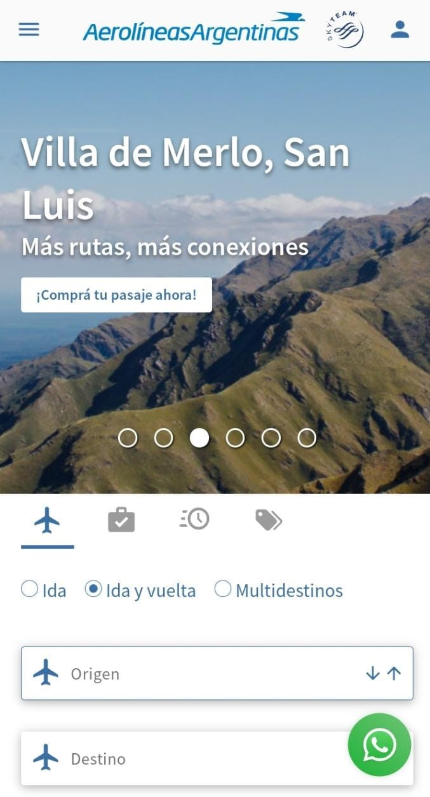
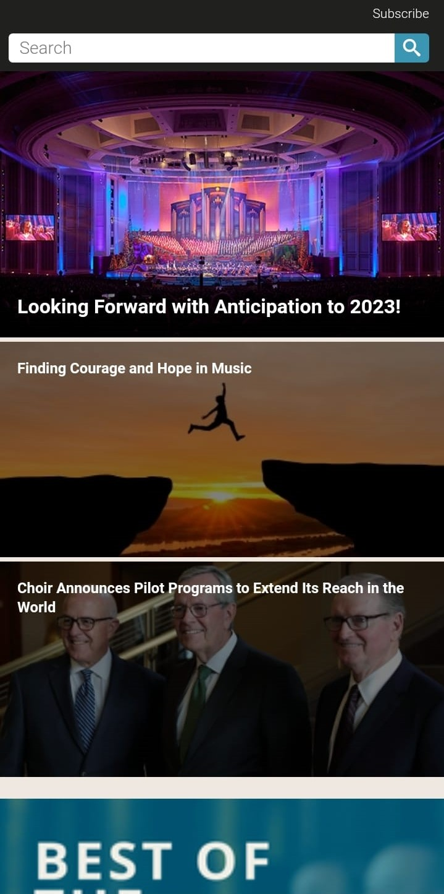
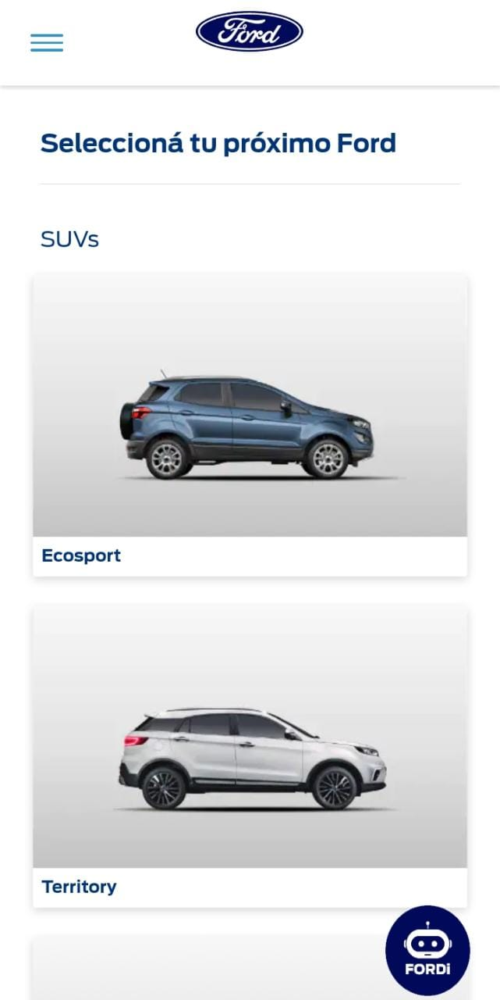

White areas
Aerolineas Argentinas White areas around, and between the elements of this design are carefully considered to improve focus and comprehension. While the user prepares for a trip, he will value the space between elements indicating distinction. This clearly helps the user in order to feel confident while booking.
Balance
The tabernacle choir The elements of this design are symmetrically and equally balanced, this creates a sacred and formal environment according to the religious content of the music played by the choir.
Repetition
Ford motors Argentina In order to display its portfolio Ford chooses to use repetition, creating a feeling of organization and consistency which enhances the consumer’s experience who feels prompted to keep scrolling and exploring through different models.